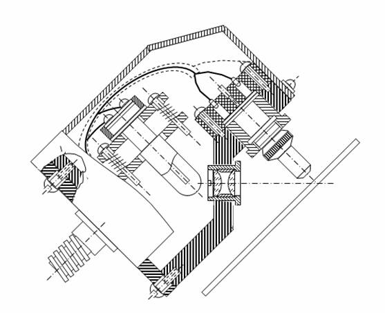

| 8 | Электрооборудование ниткошвейного автомата |
| 8.3 | Схема контроля правильности подбора тетрадей |
Схема
контроля правильности подбора тетрадей – А2. Схема включает в себя
фотоголовку (рис. 8. 6) и панель контроля (рис. 8. 7). Контроль
осуществляется при прохождении каждой второй тетради книжного блока.
Фотоголовка работает от отраженного света, создаваемого лампами
EL1, EL2.
Чувствительными элементами являются фотодиоды VD1 и VD2,
расположенные на расстоянии 30 мм друг от друга. Это расстояние
соответствует расстоянию между головкой второй тетради и специальной черной
меткой, нанесенной на белом поле у корешка тетради. При прохождении двух
тетрадей одновременно затемняются оба фотодиода. При этом с выхода
эмиттерных повторителей VТ1 и VТ4, снимаются импульсы,
проступающие на схему совпадения на транзисторах VТ2 и VТ3,.
При одновременном поступлении импульсов на базы VТ2 и VТ3, они
запираются и с их коллекторов снимается импульс, открывающий транзистор
VТ5 и включающий реле К4. Замыкающий контакт К4.1 этого
реле включает реле К3, замыкающий контакт К3.1 которого
шунтирует контакт конечного выключателя контроля правильности подбора и
момента начала шитья SQ3 (рис. 2).
Вследствие этого магнитный пускатель не выключается.
B случае
ошибки в подборе на втором месте пойдет другая тетрадь, не имеющая специальной
метки. В результате этого на схему совпадений поступит только один импульс,
фиксирующий головку тетради (допустим на базу VT3).
Транзистор VT3 схемы совпадения будет открыт, и
вследствие этого транзистор VT5 заперт и реле
К4 не включено. Не включится реле К3 и при размыкании контактов
выключателя SQ3 произойдет отключение
магнитного пускателя КМ, двигателя М1 и остановка машины. Эта
ситуация в работе машины будет отмечена световой сигнализацией: загорится
лампочка HL3 красного цвета. Повторное
включение автомата в этом случае осуществляется после устранения недостатка в
подборе блока нажатием кнопки SB3 «Установка»,
с некоторым ее удержанием в нажатом состоянии. При этом включается реле К5,
которое своими замыкающими контактами К5.1 и К5.3 совместно с
замыкающими контактом SQ4 включает магнитный
пускатель КМ и благодаря замыкающему контакту КМ.1, становится на
самопитание (контакт К5.1)

Рис. 8. 6. Конструктивное устройство фотоголовки
Рис. 8. 7. Схема контроля правильности подбора тетрадей